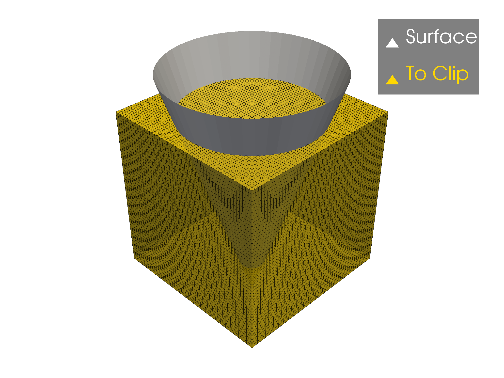
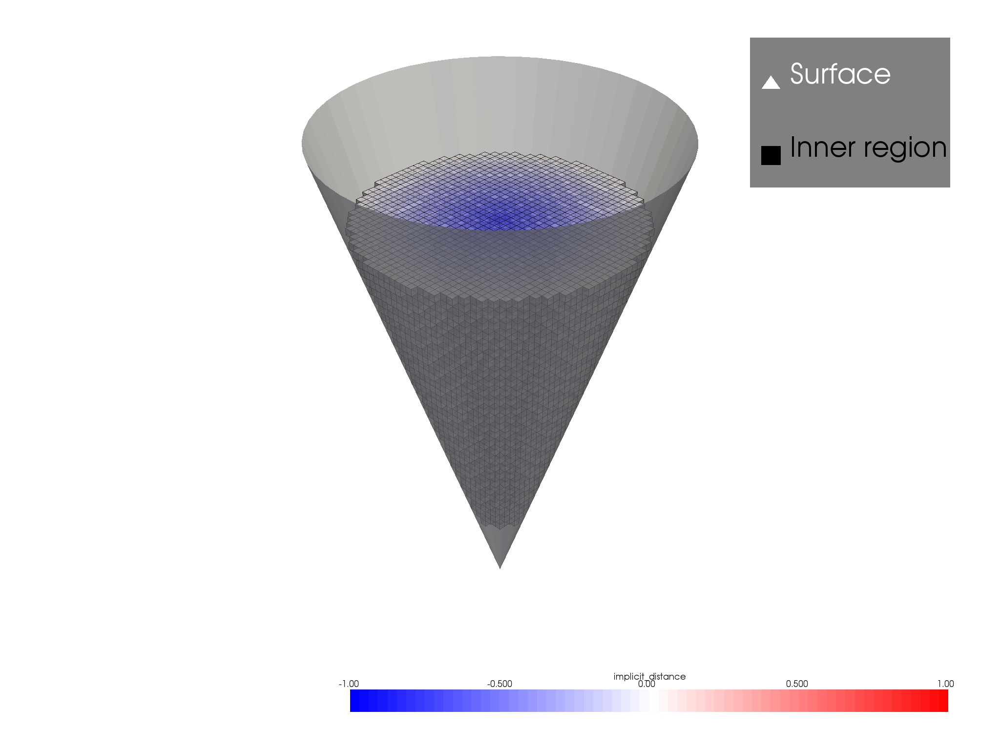
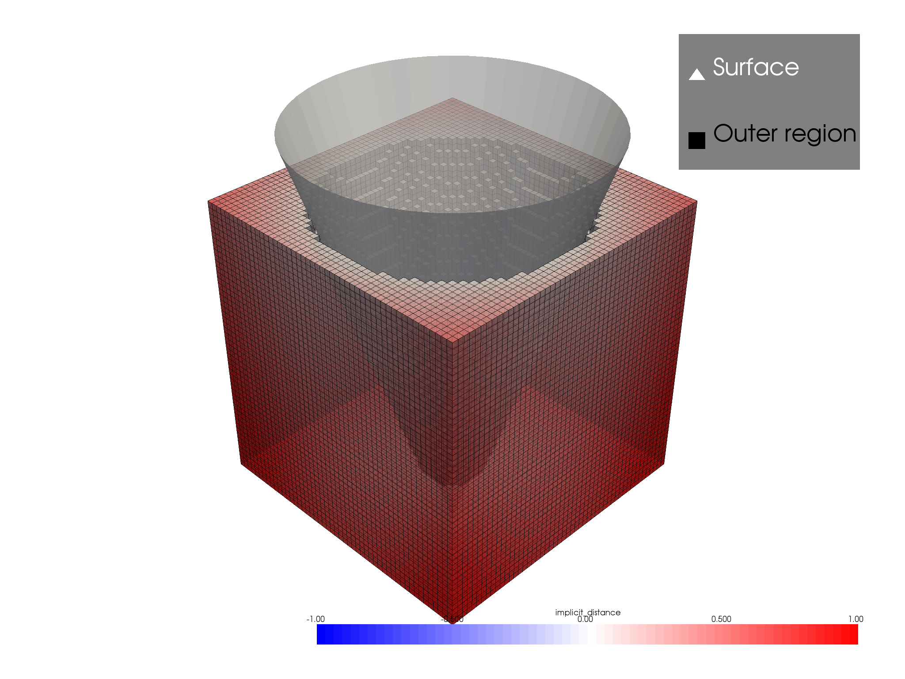
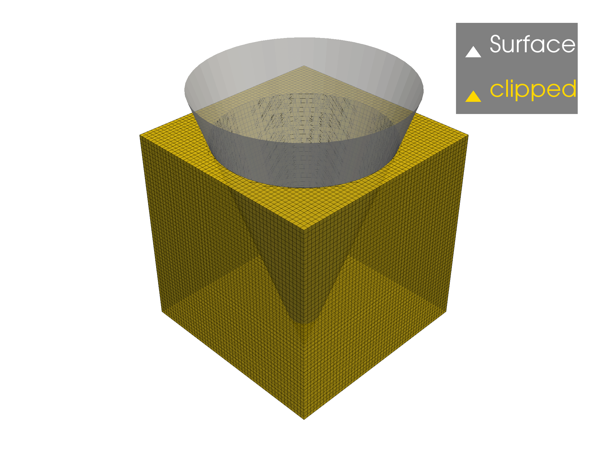
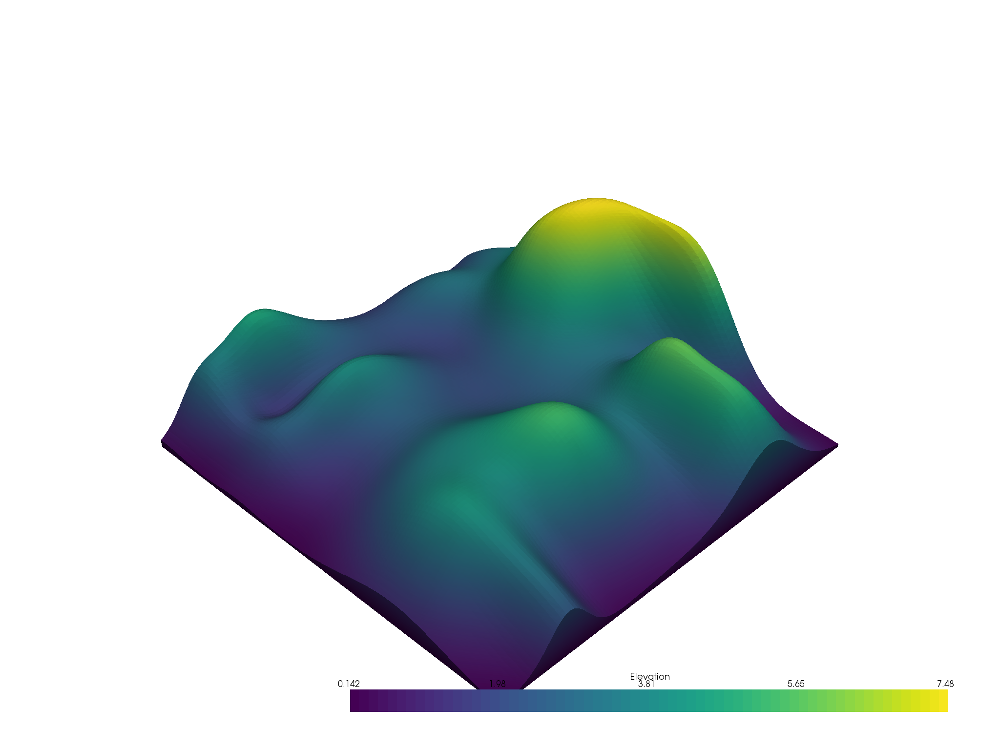

Note
Click here to download the full example code
Clipping with a Surface¶
Clip any PyVista dataset by a pyvista.PolyData surface mesh using
the pyvista.DataSet.Filters.clip_surface() filter.
Note that we first demonstrate how the clipping is performed by computing an
implicit distance and thresholding the mesh. This thresholding is one approach
to clip by a surface, and preserve the original geometry of the given mesh,
but many folks leverage the clip_surface filter to triangulate/tessellate
the mesh geometries along the clip.
# sphinx_gallery_thumbnail_number = 4
import pyvista as pv
from pyvista import examples
import numpy as np
surface = pv.Cone(direction=(0,0,-1), height=3.0, radius=1,
resolution=50, capping=False)
# Make a gridded dataset
n = 51
xx = yy = zz = 1 - np.linspace(0, n, n) * 2 / (n-1)
dataset = pv.RectilinearGrid(xx, yy, zz)
# Preview the problem
p = pv.Plotter()
p.add_mesh(surface, color='w', label='Surface')
p.add_mesh(dataset, color='gold', show_edges=True,
opacity=0.75, label='To Clip')
p.add_legend()
p.show()

Out:
[(4.622235903444128, 4.622235903444128, 4.642235903444129),
(-0.020000000000000018, -0.020000000000000018, 0.0),
(0.0, 0.0, 1.0)]
Take a look at the implicit function used to perform the surface clipping by
using the pyvista.DataSetFilters.compute_implicit_distance() filter.
The clipping operation field is performed where the implicit_distance
field is zero and the invert flag controls which sides of zero to
preserve.
dataset.compute_implicit_distance(surface, inplace=True)
inner = dataset.threshold(0.0, scalars="implicit_distance", invert=True)
outer = dataset.threshold(0.0, scalars="implicit_distance", invert=False)
p = pv.Plotter()
p.add_mesh(surface, color='w', label='Surface', opacity=0.75)
p.add_mesh(inner, scalars="implicit_distance", show_edges=True,
opacity=0.75, label='Inner region', clim=[-1,1], cmap="bwr")
p.add_legend()
p.show()

Out:
[(4.596593197286785, 4.596593197286785, 4.596593197286785),
(0.0, 0.0, 0.0),
(0.0, 0.0, 1.0)]
p = pv.Plotter()
p.add_mesh(surface, color='w', label='Surface', opacity=0.75)
p.add_mesh(outer, scalars="implicit_distance", show_edges=True,
opacity=0.75, label='Outer region', clim=[-1,1], cmap="bwr")
p.add_legend()
p.show()

Out:
[(4.62223588080962, 4.62223588080962, 4.6422358617361335),
(-0.019999980926513672, -0.019999980926513672, 0.0),
(0.0, 0.0, 1.0)]
Clip the rectilinear grid dataset using the pyvista.PolyData
surface mesh via the pyvista.DataSet.Filters.clip_surface() filter.
This will triangulate/tessellate the mesh geometries along the clip.
clipped = dataset.clip_surface(surface, invert=False)
# Visualize the results
p = pv.Plotter()
p.add_mesh(surface, color='w', opacity=0.75, label='Surface')
p.add_mesh(clipped, color='gold', show_edges=True, label="clipped", opacity=0.75)
p.add_legend()
p.show()

Out:
[(4.62223588080962, 4.62223588080962, 4.6422358617361335),
(-0.019999980926513672, -0.019999980926513672, 0.0),
(0.0, 0.0, 1.0)]
Here is another example of clipping a mesh by a surface. This time, we’ll
generate a pyvista.UniformGrid around a topography surface and then
clip that grid using the surface to create a closed 3D model of the surface
surface = examples.load_random_hills()
# Create a grid around that surface
grid = pv.create_grid(surface)
# Clip the grid using the surface
model = grid.clip_surface(surface)
# Compute height and display it
model.elevation().plot()

Out:
[(32.591428491993206, 42.5914284919932, 36.402064118309276),
(0.0, 9.99999999999999, 3.8106356263160706),
(0.0, 0.0, 1.0)]
Total running time of the script: ( 1 minutes 57.097 seconds)